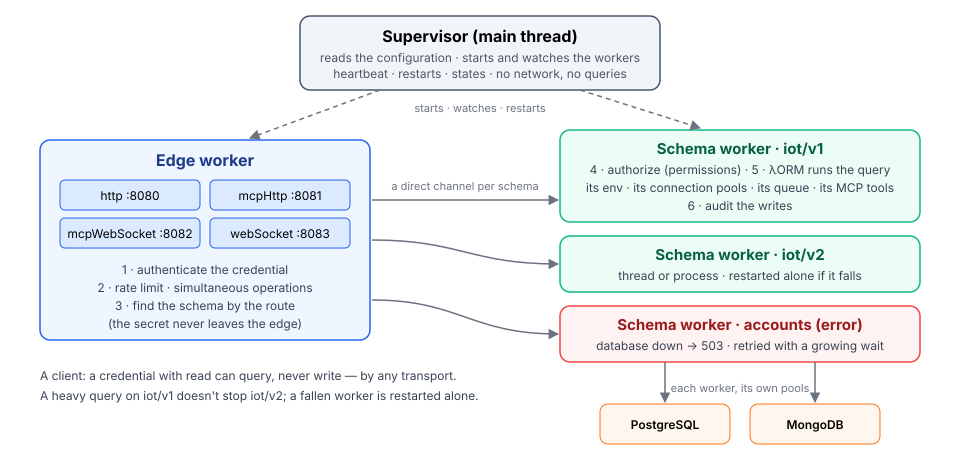

Data Gateway

Objetivo
Dar a aplicaciones, agentes de IA y personas acceso gobernado a los datos de esquemas de λORM a través de la red, mediante configuración, sin escribir un backend para ello.
Un esquema de λORM ya describe un dominio (sus entidades, relaciones y reglas) y dónde residen sus datos (una o varias bases de datos de distintos motores). El Data Gateway publica ese esquema para que:
- una aplicación lo consulte y escriba a través de una API REST (o una conexión WebSocket), con las mismas consultas lambda que usaría en Node;
- un agente de IA explore el dominio y lo consulte a través de MCP, conociendo las entidades y el lenguaje;
- una persona explore los esquemas, lea cada entidad como un formulario, pruebe consultas y dibuje diagramas en una UI web;
y para que quién puede hacer qué se decida en un único lugar, igual para todos ellos: cada credencial tiene permisos, y cada cambio se audita.
Alcance
Qué hace:
- Sirve uno o varios esquemas de λORM por instancia, cada uno en una ruta (
/iot/v1,/iot/v2,/accounts). - Los expone mediante cuatro transportes, cada uno solo cuando tiene un puerto: REST (
http), MCP (mcpHttp,mcpWebSocket) y una API JSON-RPC sobre WebSocket (webSocket). - Todas las operaciones de λORM: consultas (
execute,plan,metadata,model,parameters,constraints), scripts (varias consultas en una transacción), ejecuciones encoladas (Kafka), el esquema y su modelo, y los stages (exportación, importación). - Autenticación (API key, bearer token, basic) y permisos por credencial (
read,write,script,queue,stageImport), de forma global, por transporte o por esquema. - Aislamiento: cada esquema se ejecuta en su propio worker, con su propio entorno y sus propias conexiones; si uno falla, no afecta a los demás.
- Auditoría de escrituras, métricas (Prometheus), salud (probes de Kubernetes), límites (tasa, concurrencia, tamaños, tiempo).
- Una UI web: explorador, formularios de entidades, pestañas de consultas con autocompletado, consultas guardadas y diagramas del dominio.
Qué no hace:
- No define el dominio ni migra las bases de datos: de eso se encargan el esquema y la
CLI (
push,pull, …). - No acepta SQL: solo consultas de λORM, traducidas para cada fuente.
- No tiene usuarios ni roles propios más allá de las credenciales de su configuración (todavía no hay login contra un proveedor de identidad).
- La UI guarda lo que se guarda en cada navegador; no hay almacenamiento compartido de consultas guardadas en el servidor.
Descripción
El Data Gateway es una aplicación Node publicada como la imagen Docker
flaviorita/data-gateway. Lee un único archivo de configuración
(data-gateway.config.yaml) que indica dónde están los esquemas, cómo se exponen y quién puede usarlos; los esquemas
en sí permanecen en sus workspaces de λORM (lambdaORM.yaml).

Internamente, un supervisor arranca y vigila los workers. El edge worker escucha en los puertos de los transportes,
autentica cada petición y la envía, por un canal directo, al worker del esquema, que comprueba los
permisos, ejecuta la operación con λORM contra sus bases de datos y la audita. Una consulta pesada en un esquema no
ralentiza a otro; un esquema cuya base de datos está caída responde 503 y se reintenta, mientras los demás siguen funcionando.
Conceptos
| Concepto | Qué es |
|---|---|
| Esquema | un workspace de λORM (una carpeta con lambdaORM.yaml): dominio, fuentes, mappings, stages; servido en una ruta |
| Ruta | dónde se accede a un esquema: /iot/v1/execute, /iot/v1/mcp, ws://host/iot/v1; un único esquema puede estar en la raíz |
| Transporte | una vía de entrada, en su propio puerto: http, mcpHttp, mcpWebSocket, webSocket |
| Credencial | una clave, un token o un usuario con un nombre y permisos; el cliente la envía en cada petición |
| Permiso | read, write, script, queue, stageImport: lo que la credencial puede hacer, en todos los transportes |
| Stage | un escenario de λORM de un esquema (qué fuentes contienen qué entidades); se elige con options.stage |
| Worker | donde se ejecuta un esquema: un hilo o un proceso propio |
Una petición, paso a paso
- Un cliente envía
POST /iot/v1/executeconX-Api-Key: …y{ "query": "Orders.filter(…)", "data": {…} }. - El transporte
httpencuentra la credencial (agent, permisos[read]) y el esquemaiot/v1. - El worker del esquema analiza la consulta: solo selecciona, así que basta con
read. - λORM la traduce para cada fuente del stage, la ejecuta y une los resultados.
- La respuesta vuelve como JSON. Si hubiera escrito datos, la credencial habría necesitado
write, y la operación habría dejado una línea de auditoría.
En esta sección
- Primeros pasos: paso a paso, desde una carpeta vacía hasta la API REST, la UI, MCP y WebSocket.
- Configuración: el archivo de configuración, los esquemas, el entorno, el runtime y todas las claves.
- Transportes: los cuatro transportes, sus rutas y opciones.
- API REST: todos los métodos del transporte
http, con ejemplos. - MCP: las herramientas, los recursos y los transportes para agentes de IA.
- API WebSocket: los métodos JSON-RPC y las notificaciones.
- Seguridad: autenticación, permisos, auditoría, límites y errores.
- UI: la interfaz web: explorador, formularios de entidades, consultas, consultas guardadas y diagramas.
- Clientes:
@lambdaorm/client, la CLI y el documento OpenAPI. - Operaciones: Docker, Kubernetes, salud, métricas y logs.
- Registro de cambios